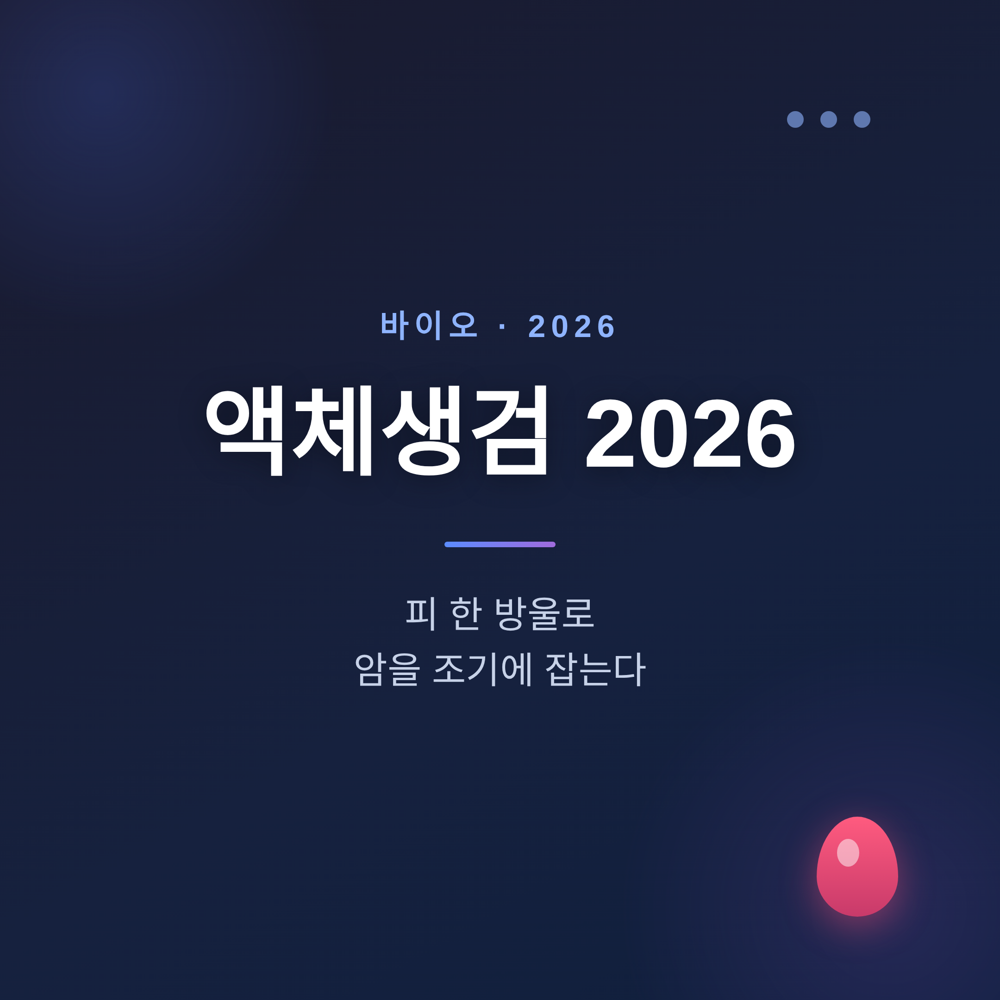
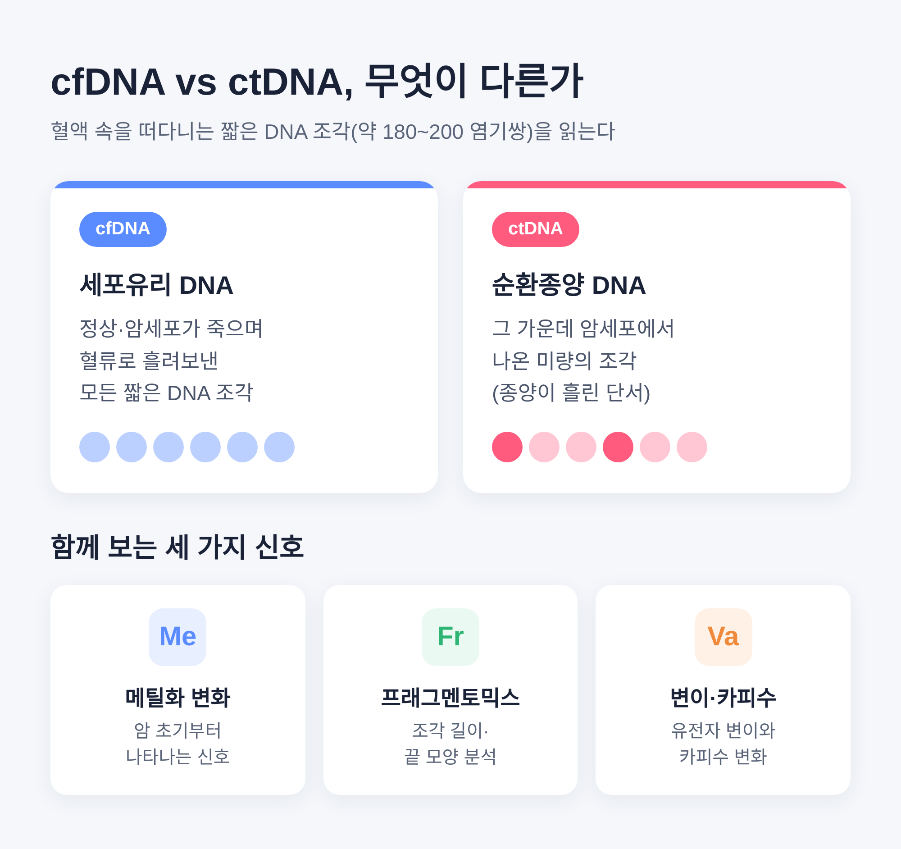
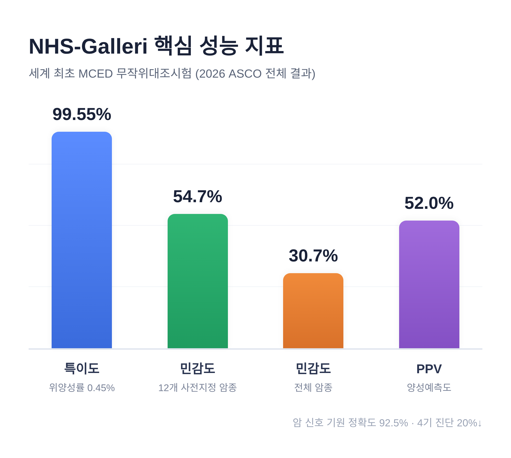
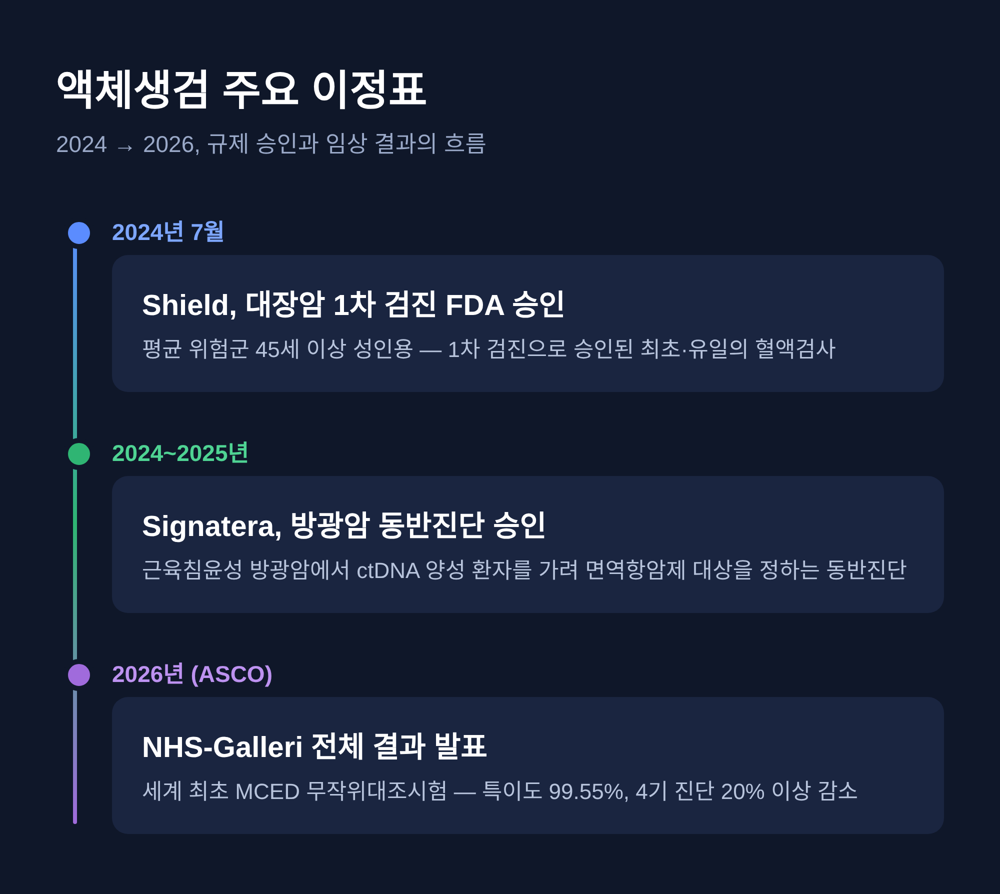

이번 글에서는 2026년의 액체생검을 정리해 보겠습니다.
채혈 한 번으로 여러 암을 동시에 살피는 검사가 어디까지 왔는지, 무엇은 아직 멀었는지 함께 짚어봅니다. 결론부터 말씀드리면, 분명한 진전이 있었지만 아직 표준 검진을 대체하지는 못합니다.
액체생검은 조직을 떼어내지 않습니다. 혈액을 한 번 뽑아 암의 흔적을 찾는 검사입니다. 소변이나 뇌척수액 같은 다른 체액도 쓸 수 있습니다.
핵심은 피 속을 떠다니는 짧은 DNA 조각입니다. 세포가 죽으면서 혈류로 흘려보낸 조각을 cfDNA(세포유리 DNA)라고 부릅니다. 길이는 대략 180~200 염기쌍 정도로 짧습니다.
이 가운데 암세포에서 나온 것을 ctDNA(순환종양 DNA)라고 합니다. 종양이 혈류에 흘린 미량의 단서를 추적하는 셈입니다.
예전엔 변이 하나를 찾는 데 집중했습니다. 지금은 여러 신호를 함께 봅니다. 암 초기부터 나타나는 메틸화 변화, DNA 조각의 길이와 끝 모양을 읽는 프래그멘토믹스, 카피수 변이까지 종합합니다.

MCED는 다중암 조기검진을 뜻합니다. 혈액 검사 한 번으로 여러 암을 동시에 살피고, 신호가 어느 장기에서 왔는지까지 추정합니다. 대표 주자는 GRAIL사의 Galleri입니다.
세계 최초의 MCED 무작위대조시험인 NHS-Galleri의 전체 결과가 2026년 ASCO에서 발표됐습니다. 숫자를 그대로 옮기면 이렇습니다.
| 지표 | 결과 |
|---|---|
| 특이도 | 99.55% (위양성률 0.45%) |
| 민감도 (사전 지정 12개 암종) | 54.7% |
| 민감도 (전체 암종) | 30.7% |
| 양성예측도(PPV) | 52.0% (첫 라운드 58.0%) |
| 암 신호 기원 정확도 | 92.5% |
세 번의 검진 라운드에서 참가자의 0.91%가 양성 판정을 받았고, 그중 937명이 실제 암으로 진단됐습니다. 표준 검진에 Galleri를 더했더니, 첫 1년 뒤 측정 가능한 암에서 4기 진단이 20% 이상 줄었습니다.
PATHFINDER 2 연구의 톱라인 데이터도 같은 방향입니다. 표준 검진에 Galleri를 추가하자 암 검출이 7배 이상 늘었고, 새로 찾은 암의 절반 이상이 조기 단계였습니다.

조기 검진만큼 주목받는 영역이 미세잔존질환(MRD)입니다. 수술이나 치료 뒤, 영상으로는 보이지 않는 잔존 암을 ctDNA로 찾아냅니다.
Natera사의 Signatera는 근육침윤성 방광암에서 의미 있는 승인을 받았습니다. ctDNA가 양성인 환자를 가려내 보조 면역항암제 아테졸리주맙을 쓸 대상을 정하는 동반진단으로 FDA 승인을 받았습니다.
이것은 작지 않은 변화입니다. 영상이 아니라 분자 증거로 잔존 암을 판단하는 길이 처음으로 규제 승인을 받은 사례이기 때문입니다.
임상 결과도 이를 뒷받침합니다. IMvigor011 3상에서 ctDNA 양성 환자의 무병생존은 9.9개월 대 4.8개월, 전체생존은 32.8개월 대 21.1개월로 개선됐습니다. 반대로 MRD 음성 환자는 보조요법 없이도 2년 전체생존 97%에 이르렀습니다.
치료를 더할 사람과 덜어줄 사람을 함께 가린다는 점이 인상적입니다.
Guardant Health의 Shield는 2024년 7월 FDA 승인을 받았습니다. 평균 위험군 45세 이상 성인의 대장암 1차 검진용으로 승인된 최초이자 유일한 혈액검사입니다.
2만 명 이상이 참여한 ECLIPSE 연구에서 대장암 검출 민감도는 83.1%, 1~3기 민감도는 87.5%, 특이도는 90%였습니다. 이후 NCCN이 대장암 검진 가이드라인에 1차 옵션으로 추가했고, 미국암학회도 2026년 업데이트에서 새 옵션으로 권고했습니다.

국내에서는 아이엠비디엑스의 캔서파인드가 앞서 있습니다. 한 번의 채혈로 대장·위·간·췌장·폐·유방·난소·전립선암 8개 암종을 동시에 살피고 원발부위를 예측합니다. 2024년 11월 출시돼, 현재 국내 10개 상급종합병원에서 상용화됐습니다.
성능 수치는 임상과 발표 시점에 따라 조금씩 다릅니다. 1,034명 임상에서는 특이도 97.3%, 민감도 89.6%, 암종 예측 정확도 86.9%였고, ESMO 2024 발표에서는 민감도 87.7%, 특이도 96.1%, 예측 정확도 84.1%였습니다. 하나의 숫자로 단정하기보다, 이 정도 범위로 이해하시면 좋겠습니다.
회사는 적용 암종을 8종에서 20종으로 넓히고, 검사 비용을 100만 원에서 30만 원 수준으로 낮추는 것을 목표로 합니다. GC지놈의 아이캔서치는 2023년 9월 출시됐습니다(세부 성능 수치는 확인되지 않았습니다).
좋은 소식만 있는 것은 아닙니다. 2025년 2월 기준, MCED 검사 중 글로벌 규제기관의 의료기기로 정식 승인된 것은 없습니다. 주요 임상 가이드라인은 MCED를 권고하지 않으며, 표준 검진의 대체가 아닙니다.
가장 자주 지적되는 약점은 양성예측도입니다. 초기 PATHFINDER에서 PPV는 38%였습니다. 특이도가 99%대로 높아도, 암이 드문 일반 인구에서는 양성 판정의 다수가 위양성일 수 있습니다. 불필요한 추가 검사, 침습적 시술, 그리고 환자의 불안으로 이어질 수 있습니다.
극초기 암을 놓치기 쉽다는 점도 분명합니다. 진행된 암일수록 ctDNA가 많아 잘 잡히지만, 치료 효과가 가장 큰 극초기 암은 ctDNA가 적어 놓치기 쉽습니다. 전체 암종 민감도가 30.7%에 머문 것도 이 한계를 보여줍니다.
학계의 표현을 빌리면, 액체생검을 "큰 희망"으로 볼지 "과장"으로 볼지는 여전히 논쟁 중입니다. 조기 발견의 이득과 위양성·과진단의 해악, 그 사이의 균형이 핵심입니다.
정리하면 이렇습니다.
액체생검은 2026년에 분명한 발판을 마련했습니다. 대장암 1차 검진과 방광암 치료 결정에서 규제 승인이라는 실질적 진전이 나왔고, 다중암 검진은 4기 진단을 줄이는 효과를 보여줬습니다. 다만 위양성과 극초기 암 검출이라는 숙제는 그대로 남아 있습니다.
피 한 방울이 검진의 시작을 앞당길 수는 있어도, 아직 그것이 결론을 대신하지는 않습니다.